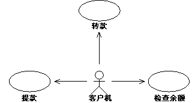
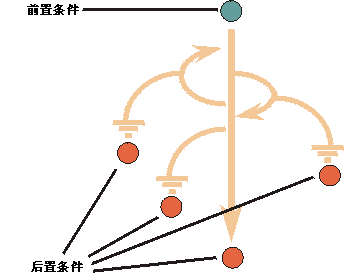

| 指南：用例 |
 |
|
说明在该定义中有几个关键字：
系统的功能由不同用例定义，每个用例代表一个特定的事件流。用例的描述定义在执行用例时系统中发生的事件。  例如，在自动柜员机上，客户可以从帐户中取款、将金额转到某个帐户上或检查帐户余额。这些功能与可用用例表示的流相对应。 每个用例都有各自的任务要执行。收集的用例构成使用系统的所有可能的方法。仅仅观察用例的名称，就可以了解用例任务的概念。 如何查找用例以下是在确定用例时有用的一组问题：
由于通常不代表系统主要功能而经常被忽视的用例可能属于以下类型：
如果您已经开发了业务用例模型和业务分析模型，那么这些工件对于确定用例而言是一个不错的起点。 用例如何发展在精化阶段的早期迭代中，除了简短描述之外，只详细描述几个用例（那些被视为在体系结构上很重要的用例）。在深入了解详细信息之前，应始终首先得出用例的概述（按逐步的形式）。这种逐步概述应是您第一次尝试定义用例事件流的结构（请参阅下面的事件流 － 结构）。请始终从用例的基本流开始。一旦在基本流的概述上达成某种协议，就可以添加与基本流相关的备用流了。 在精化阶段末期，将完成您计划详细描述的所有用例。 详细描述所有用例吗？模型中的用例通常如此简单，以致于不需要详细描述事件流，使用逐步概述就足够了。作出该决策的条件是您未发现作为读者的用户类型与用例的含义不一致，并且设计人员和测试人员对于按逐步方式提供的详细级别感到满意。比如描述简单输入或从系统检索某些数据的用例。 用例范围通常很难确定一组用户系统交互或对话是一个还是多个用例。 请考虑使用回收机器。客户将堆积物项（如罐头、瓶子和板条箱）插入回收机器。插入了所有堆积物项后，按下某个按钮并打印出收据。然后她就可以用该收据换钱了。 是一个用例插入堆积物项，而另一个用例要求收据吗？还是都是一个用例呢？有两个操作，但如果只有一个操作而缺少另一个操作，这对客户来说是没什么价值的。更准确地说，所有的插入及得到收据是一次完整对话，对于客户来说这才是有价值的（并有意义的）。因此，完整的对话 － 从插入第一个堆积物项到按下按钮并得到收据 － 是一个完整的用例。 另外，您要将两个操作放在一起，这样就能够同时进行检查、一起修改、测试、撰写手册并通常将它们作为一个单元进行管理。这在更大型的系统中就更明显了。 用例如何实现用例描述当参与者与系统交互以执行用例时系统中发生的事件。用例并不定义系统如何根据协作对象在内部执行任务。这留待用例实现来显示。 示例： 在电话示例中，用例主要将表明 － 系统在接听器被提起时发出信号并开始接收数字信号，查找接听方，使电话响铃，连接通话，传送对话等等。 在执行系统中，用例实例不对应实施模型中的任何特定对象（例如，代码中的类实例）。相反，它与由参与者调用并作为一组对象之间的事件序列而执行的特定事件流相对应。换言之，用例实例与已实施的对象的通信实例相对应。我们将此称为用例实现。通常，相同的对象参与多个用例的实现。例如，银行系统中的用例“存款”和“提款”都可以使用它们的实现中的某个帐户对象。这并不表示两个用例在通信，只是说明这两个用例在使用其实现中的同一个对象。 可以将事件流看作是由几个子流组成，它们一起产生了总的事件流。可以在其他用例的事件流中重用某个子流的描述。一个用例的事件流描述中的子流可通用于其他用例的描述。在设计中，您应该让相同的对象对所有相关用例执行这个共同的行为；即，无论哪个用例在执行，应只有一组对象执行该行为。 示例： 在自动柜员机系统中，初始子流与用例“提款”和“检查余额”的事件流中的子流一样。两个用例的事件流都从检查卡的身份和客户的私人访问代码开始。 一个用例具有多个可能的实例一个用例实例可遵照几乎无限制、但可一一枚举的多个路径。这些路径表示向用例事件流描述中的用例实例开放的选项。选择的路径取决于事件。事件类型包括：
示例： 在回收机器系统中的用例“回收物项”中，客户始终有两个选项：继续提交其他堆积物项或得到退还物项的收据。
示例： 在自动柜员机系统中的用例“提款”中，如果客户申请提取的金额大于帐户中的金额，事件流将有所不同。因此，用例实例将遵照不同的路径。 用例实例的并行性如果系统允许，多个用例的实例和同一用例的多个实例则并行运作。在用例建模中，可以假设用例实例可以无冲突地并行活动。由于用例建模未描述事项如何运作，因此希望由设计模型来解决这个问题。查看该问题的一个方法是假定一次只有一个用例实例处于活动状态，并且执行该实例是一个很微小的操作。在用例建模中，“解释机器”被认为是极快的，因此用例实例的序列化是不成问题的。 名称每个用例都应有一个名称来表明它与参与者的交互实现了什么。名称可能必须由几个字组成才能被理解。任何两个用例的名称都不能相同。 示例： 以下是回收机器示例中的用例“回收物项”的名称的变体示例：
简述用例的简短描述应反映它的用途。当撰写描述时，请参考用例中涉及到的参与者、词汇表，并在需要时定义新的概念。 示例：以下是回收机器系统中的用例“回收物项”和“添加新的瓶子类型”的简短描述样本： 回收物项：用户使用该机器自动对所有返还物项（瓶子、罐头和板条箱）计数并接收收据。收据将在收银机上兑换成现金。 添加新的瓶子类型：通过以“学习模式”启动这种瓶子并如同在返还物项时那样插入 5 个样本，可以将新类型的瓶子添加到机器中。这样，机器就可以估量并学会识别这些瓶子了。管理员指定新的瓶子类型的退款额。 事件流 － 内容用例的事件流包含从用例建模工作中派生出来的最重要信息。这些信息应充分明确地描述用例的事件流，以便外部人员易于了解它。请记住，事件流应该表示系统做什么，而不是如何设计系统以执行必需的行为。 事件流内容的指导信息如下：
如果已在其他用例中的使用了某些术语，则务必在该用例中使用完全相同的术语，并且它们的预期含义也是相同的。要管理通用术语，请将这些术语放入一个词汇表中。
事件流 － 结构
|

|
1.1. 启动用例
当参与者操作员指示系统创建评估订单时，该用例启动。然后，系统将检索可用于该特定操作员的所有“网络元素”参与者、其评估对象以及相应的评估功能。可用的网络元素是指那些处于运作中、并且操作员有权访问的网络元素。评估功能的可用性取决于为特定类型的评估对象所作的设置。 1.2. 配置评估订单 系统允许参与者操作员选择要评估的网络元素，然后显示可用于所选网络元素的评估对象。 系统还允许操作员选择评估对象并选择为每个评估对象设置的评估功能。 系统允许操作员在评估订单上输入文本注释。 操作员指示系统完成评估订单。作为响应，系统将生成评估订单的唯一名称并设置进行评估的缺省时间、缺省频率和缺省持续时间。这些缺省值对每个操作员都是唯一的。然后，系统将允许操作员编辑这些缺省值。 1.3. 初始化订单 操作员指示系统初始化评估订单。然后，系统将记录创建订单的操作员的身份、创建日期和评估订单的“已调度”状态。 1.4. 用例结束 系统向操作员确认评估订单的初始化，并且评估订单可供其他参与者查看。 |
描述用例：按照此样式，文本是易读的，而事件流易于遵循。 请在描述中使用此样式。
示例 2：
|
订购人员可以创建订单来收集网络元素的评估数据。
系统将为订单指定唯一名称以及指示评估持续时间和评估时间以及评估重复频率的缺省值。订购人员将能够编辑这些值。 订购人员必须进一步指定适用的评估功能、网络元素和评估对象。订购人员也可为订单添加个人注释。 定义了必要信息之后，就用定义的属性、创建者名称和创建日期来创建和初始化新的订单。订单的状态将被设置为“已调度”。（可能的状态值是：已调度、正在执行、已完成、已取消和错误。） 然后，用户界面收到关于新订单已创建的通知并接收到该新订单的参考，这样就可以显示该订单。 |
描述用例：该样式是可读的，但没有明确的事件流。
示例 3：
‘管理订单’（用户身份）
REPEAT
<= ‘显示管理订单菜单’
IF（=> '创建订单'（评估功能、网络元素、评估目标））THEN
系统找到唯一名称，以及应在什么时候执行评估和执行评估的时长的缺省值。
<= '显示订单'（缺省属性）
REPEAT
=> '编辑订单'（变更属性，属性的新值）
<= '更新屏幕'（新属性）
UNTIL（定义了所有属性）
REPEAT
IF（=> '编辑订单'（变更属性，属性的新值））
THEN <= '更新屏幕'（新属性）
ELSIF（=> '保存订单'（订单标识，属性））THEN
在系统中创建和初始化该订单，并附带定义的属性、创建者名字、创建日期以及状态“已调度”。
<= '新订单已创建'（该订单）
ENDIF
UNTIL（=> '退出'）
ENDIF
UNTIL '退出管理订单'
|
描述用例：在此，作者选择了使用伪码的正式样式。该样式使读者很难快速领会流程步骤，但当很难准确获取事件流时，该样式可能是有用的。
事件流 － 示例
用例“管理订单”的事件流的完整描述（包括其备用流）可能如下所示：
1. 基本事件流
1.1. 启动用例
当参与者操作员指示系统创建评估订单时，该用例启动。然后，系统将检索可用于该特定操作员的所有“网络元素”参与者、其评估对象以及相应的评估功能。可用的网络元素是指那些处于运作中、并且操作员有权访问的网络元素。评估功能的可用性取决于为特定类型的评估对象所作的设置。
1.2. 配置评估订单
系统允许参与者操作员选择要评估的网络元素，然后显示可用于所选网络元素的评估对象。系统还允许操作员选择评估对象并选择为每个评估对象设置的评估功能。
系统允许操作员在评估订单上输入文本注释。
操作员指示系统完成评估订单。作为响应，系统将生成评估订单的唯一名称并设置进行评估的缺省时间、缺省频率和缺省持续时间。这些缺省值对每个操作员都是唯一的。然后，系统将允许操作员编辑这些缺省值。
1.3. 初始化订单
操作员指示系统初始化评估订单。然后，系统将记录创建订单的操作员的身份、创建日期和评估订单的“已调度”状态。
1.4. 用例结束
系统向操作员确认评估订单的初始化，并且评估订单可供其他参与者查看。
2. 备用事件流
2.1. 没有可用的网络元素
如果在 1.1“启动用例”中发现没有可用于评估该操作员的网络元素，系统将通知操作员。然后用例结束。
2.2. 没有可用的评估功能
如果在 1.2“配置评估订单”中，没有可用于所选网络元素的评估功能，系统将通知操作员并允许该操作员选择其他网络元素。
2.3. 取消评估订单
系统将允许操作员在执行用例期间随时取消所有操作。 然后系统将回到启动用例之前的状态并结束该用例。
特殊需求 
在用例的“特殊需求”中，描述事件流未涵盖的所有用例需求。这些需求是将影响设计模型的非功能需求。 另请参阅工作产品指南：用例模型中关于非功能需求的讨论。可以将这些需求组织成多个类别，如可用性、可靠性、性能和可替换性，但通常这些需求很少，因此这样的分组并不是特别增值。
示例：
在回收机器系统中，“返还堆积物项”用例的某个特殊需求可以是：
机器必须能够以 95% 以上的可靠性识别堆积物项。
前置条件和后置条件
使用前置条件和后置条件概念对于阐述如何启动和结束事件流是很有用的。但是，仅当用例使用者认为这些概念可增值时，才使用这些概念。

前置条件是可以启动用例之前系统的状态和所需的环境。后置条件是结束用例之后系统可能处在的状态。
请考虑以下各项：
- 由前置条件或后置条件描述的状态应为用户可观察到的状态。可观察到的状态示例有“用户已登录到系统”或“用户已打开文档”。
- 前置条件是对用例可在何时启动的约束。它不是启动用例的事件。
- 虽然可在子流级别定义前置条件和后置条件，但一个用例的前置条件并不只是一个子流的前置条件。
- 无论执行了什么备用流，用例的后置条件均应为真；仅对于主流，它不应为真。如果出现故障，可以通过声明“操作已完成，或者，如果出现故障，则不执行操作”（而不只是“操作已完成”）在后置条件中包含该情况。
- 当将后置条件与扩展关系结合使用时，应注意，扩展用例并不引入违反基本用例中后置条件的子流。
- 后置条件可成为描述用例的强有力工具。首先定义假设用例要实现的目标 － 后置条件。然后可以描述如何达到该条件 － 所需的事件流。
示例：
ATM 机器中用例“提款”的前置条件：客户具有适合读卡机的针对个人发行的卡，已发行 PIN 编号并向银行系统注册。
ATM 机器中用例“提款”的后置条件：结束用例时，所有帐户和事务日志都是平衡的，与银行系统的通信已重新初始化，且已退还客户的卡。
扩展点
扩展点展开用例，使其有可能扩展。它具有名称和用例的事件流内一个或多个位置的一系列引用。扩展点可以引用该用例内两个行为步骤之间的单个位置。它也可以引用一组离散的位置。
使用已命名的扩展点，将帮助您将扩展用例的行为规范与基本用例的内部详细信息相分离。可以修改或重新安排基本用例，只要扩展点的名称保持不变，这将不会影响扩展用例。同时，您没有下载基本用例的事件流的描述文本以及可扩展行为的位置的详细信息。另请参阅工作产品指南：扩展关系。
示例：
在电话系统中，用例“发出呼叫”可以用抽象用例“显示来电者身份”来扩展。这是可选服务，通常称为“致电者身份”，接收方可请求也可不请求该服务。用例“发出呼叫”中的扩展点的描述可如下所示：
名称：显示身份
位置：在“1.9 使接听方电话响铃”这一部分之后。
用例图
可以选择在归用例所有的用例图（在个别用例中不止一个图）中说明用例与参与者以及用例与其他用例的关系。如果用例涉及多个参与者，或与多个其他用例有关系，这种做法是很有用的。这类图具有“局部”特性，因为它仅从一个用例的角度显示了用例模型，而且并不是旨在解释任何关于整个用例模型的一般事实。另请参阅工作产品指南：用例图。
© Copyright IBM Corp. 1987, 2006. All Rights Reserved. |